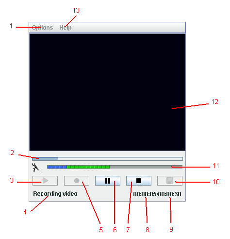

Video Recording Applet Help
1. Video recording applet interface
2. How to record video
Video recording applet interface

-
Options. Here you can choose: a) video/audio quality - Low, Normal, High. Video file, recorded with Low quality, has minimal file size, recorded with High quality - maximal file size. b) video input device. c) audio input device.
-
Indicator of buffer infilling during recording / Indicator of current position in the file during playback.
-
Playback.
-
Status messages field;
-
Record.
-
Pause.
-
Stop.
-
Current recording time.
-
Maximal recording time during recording / Video file lenght during playback.
-
Upload video to server.
-
Audio input level indicator. Recommended input level is in green zone. You can change input volume by using sound mixer on the Windows or in the system preferences/sound on the Mac.
-
Video screen.
-
Help.
How to record video
Video recording applet records video in mp4 format. To video capture applet uses usual web camera or camcorder (DV camera).
a) Web camera using:
Camera have to be connected to your computer before web page with applet is opened. Initially, applet works in preview mode. In this mode you can see yourself. To record video, click on the Record button (5). During video recording special sign (flickering red circle) appears in the top-right corner of video field. To stop the record, click on the Stop button (7). To evaluate video quality and content of video, click on the Playback button (3). During video playback flickering green triangle appears in the top-right corner of video field ( on the Windows platform only). Also, you can use Pause button (6) during recording and playback. To upload video on the server, click on the Upload button (10).
b) DV camera using:
-
record video with DV camera,
-
connect DV camera to computer via FireWire ( IEEE 1394 ) port,
-
open web page with video recording applet,
-
choose in the Option applet menu the DV camera as video input device and audio input device,
-
click Play buton on the DV camera. You will see the video on the applet screen in preview mode,
-
click Record button on the applet control panel. The recording of video by applet will start,
-
to pause video recording use Pause button. DV camera will continues to playback while recording by applet is paused.
-
to stop record click on the Stop button of applet and Play button of DV camera
-
to upload video on the server, click on the Upload button.
Note! Applet does not work simultaneously with other video recording program.
For questions and suggestions, please, contact us: info@vimas.com